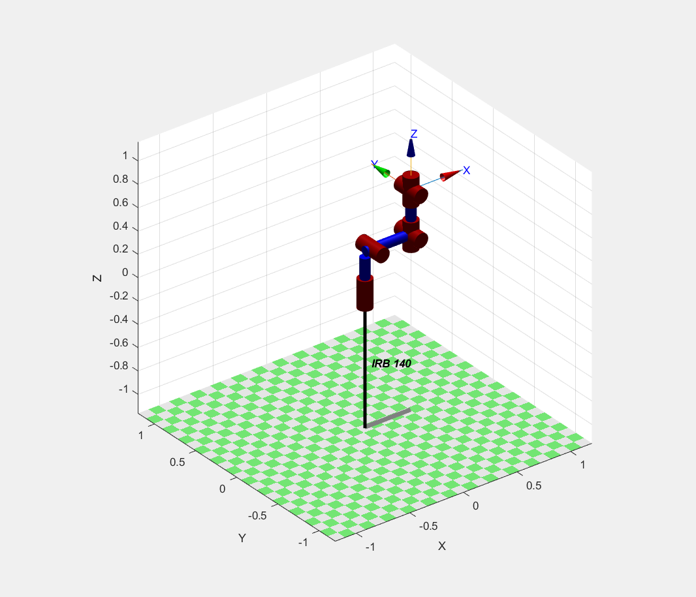
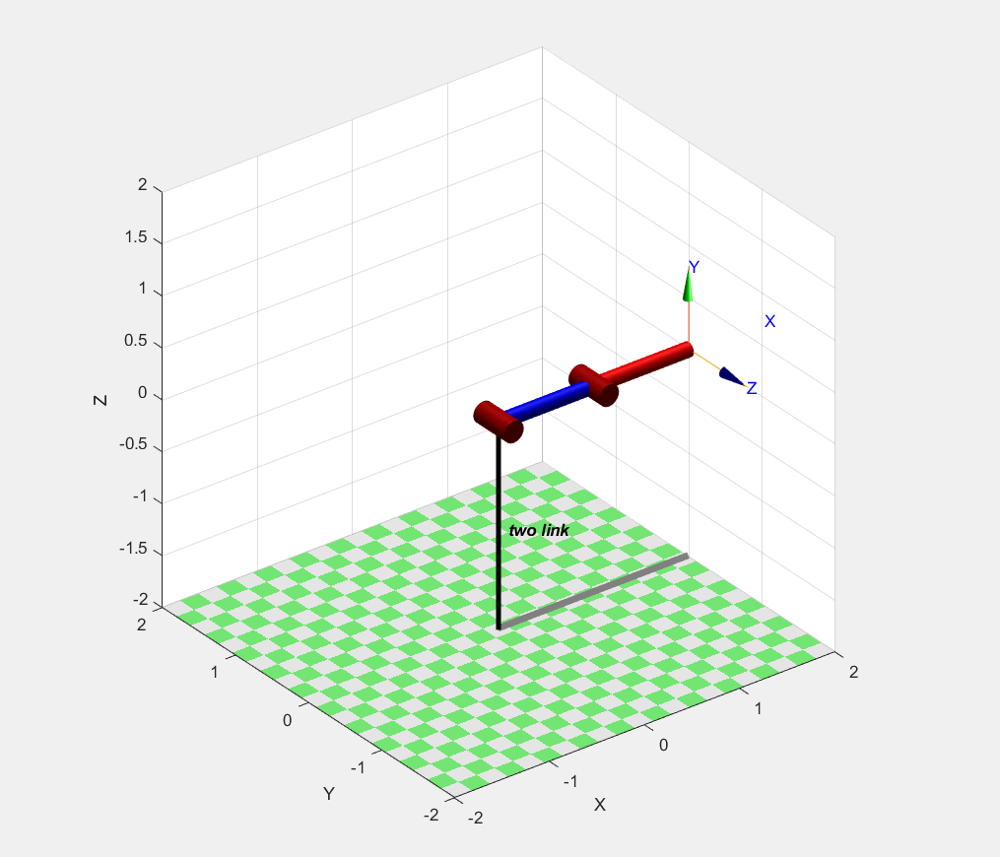

Este projeto foi realizado no âmbito da disciplina de Sistemas de Robótica
do 6º semestre da Licenciatura em Engenharia Informática
da Universidade Autónoma de Lisboa.
O grupo responsável pelo trabalho é composto por:
Jorge Vaz 30002521
Krystyna Shvets 30002527
Verónica Pernes 30002681
O docente Professor Doutor Laercio Cruvinel lançou o desafio de criarmos uma WebPage onde expuséssemos a
Cinemática Direta, Cinemática Inversa e um exemplo de Trajetorias dos robots:
IRB140 (com 6 graus de liberdade)

TwoLink (com 2 graus de liberdade)

>> mdl_irb140;
>> irb140.plot(qz)
>> mdl_twolink;
>> twolink.plot(qz)
Para o desenvolvimento do projeto foi usado o MatLab e a Robotics Toolbox de Peter Corke.
clear, close, clc
mdl_irb140
qd
T =irb140.fkine(qd)
qi= irb140.ikine(T,[0 0 0],'mask',[1 1 1 0 0 0]);
figure(1);
irb140.teach(qi)
pause(5)
figure(2);
Ta = irb140.fkine(qi)
Ta.print('xyz')
trplot(T, 'color', 'b')
hold on
trplot(Ta, 'color', 'r') %analisar se a pose difere
TwoLink
clear; close; clc
mdl_twolink
T =twolink.fkine(qn)
q = twolink.ikine(T, [0 0], 'mask',[1 1 0 0 0 0])
figure(1);
twolink.teach(q) %plota o robot com o cotovelo para baixo
pause(2)
figure(2);
Ta = twolink.fkine(q);
Ta.print('xyz')
trplot(T, 'color', 'b')
hold on
trplot(Ta, 'color', 'r') %analisar se a pose difere
Trajectórias
IRB140
clear, close, clc
mdl_irb140
%mover o end-effector entre duas poses cartesianas
T1 = SE3(0.4, 0.2, 0) * SE3.Rx(pi);
T2 = SE3(0.4, -0.2, 0) * SE3.Rx(pi/2);
% os vetores de coordenadas conjuntas associados a essas poses são
q1 = irb140.ikine6s(T1);
q2 = irb140.ikine6s(T2);
%tempo para que a trajetoria ocorra
t = [0:0.05:2]';
q = mtraj(@tpoly, q1, q2, t);
q = jtraj(q1, q2, t);
[q,qd,qdd] = jtraj(q1, q2, t);
q = irb140.jtraj(T1, T2, t);
figure(1);
irb140.plot(q) %animação da trajetoria
figure(2);
qplot(t, q); %traçar todos os ângulos de junta, em função do tempo
TwoLink
clear, close, clc
mdl_irb140
%mover o end-effector entre duas poses cartesianas
T1 = SE3(0.4, 0.2, 0) * SE3.Rx(pi);
T2 = SE3(0.4, -0.2, 0) * SE3.Rx(pi/2);
% os vetores de coordenadas conjuntas associados a essas poses são
q1 = irb140.ikine6s(T1);
q2 = irb140.ikine6s(T2);
%tempo para que a trajetoria ocorra
t = [0:0.05:2]';
q = mtraj(@tpoly, q1, q2, t);
q = jtraj(q1, q2, t);
[q,qd,qdd] = jtraj(q1, q2, t);
q = irb140.jtraj(T1, T2, t);
figure(1);
irb140.plot(q) %animação da trajetoria
figure(2);
qplot(t, q); %traçar todos os ângulos de junta, em função do tempo